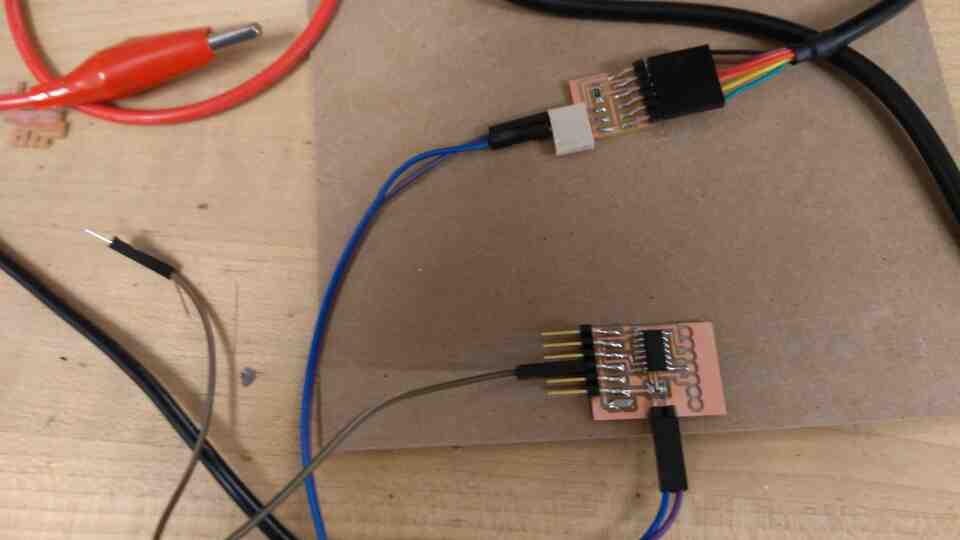
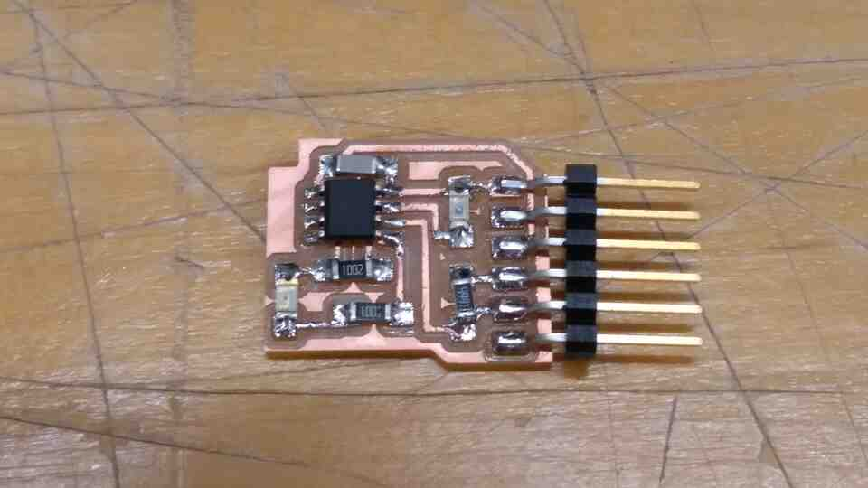
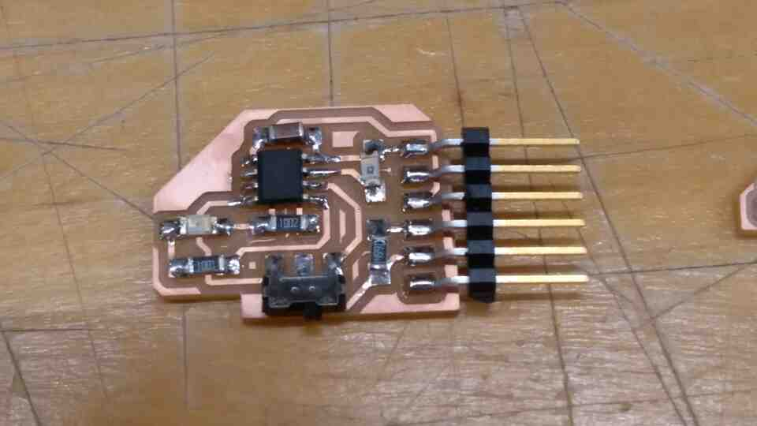
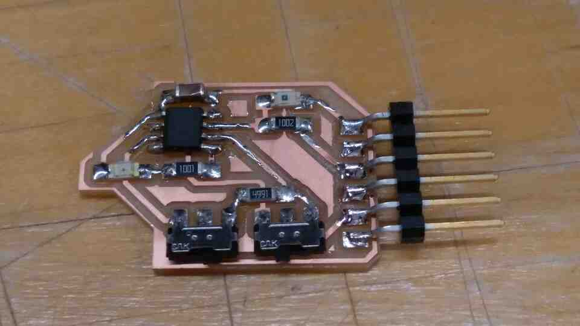
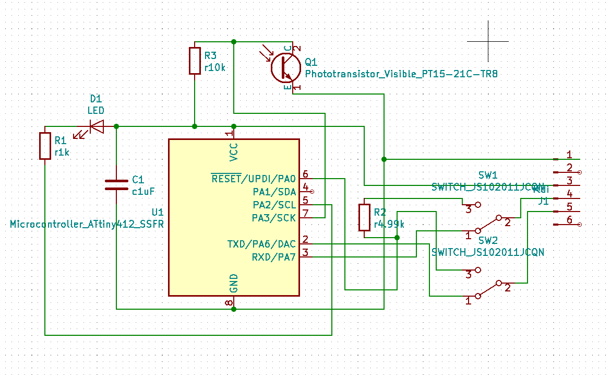
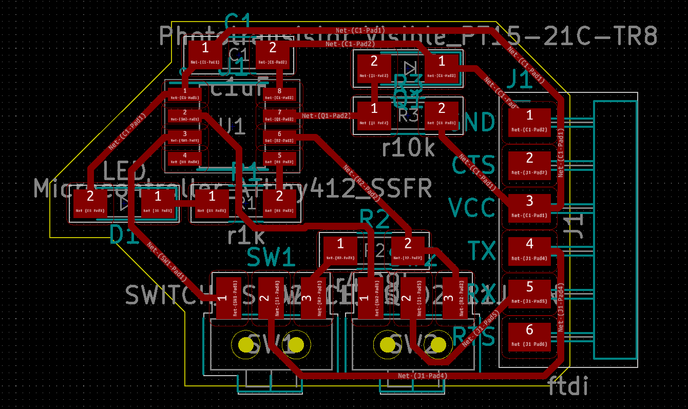

None of the PCB's I created for the previous weeks are functional. So, I wanted to create a new board, and more stable workflow for loading/testing software into it.
This time I focused on AVR's, and to keep everything simple and safe, I started from Neil's design (link here). To program the board via UPDI, I also created this (link here).
Using this (link here) cable adapter I followed (link here) to upload a sample echo (link here) program. In the first try, the program seemed to install, but when I connected the board through serial, it did not function.
On further trials, I had an error (insert error here) and later noticed that my cable adapter is the 3.3 volt version.
To provide the board with 5 volts, I used the power supply in the archshops which resulted in my attiny (add model no) board to literally get smoked.

How do I provide power to a board with 2 pin UPDI? -with another serial adapter.
Can I proceed with a 3.3 volt cable adapter? Or should I get a 5V one? -the existing board provides 5 volts.
Is it possible that my cable adapter is also damaged? -it is fine.
Trying to program an Attiny 412 with Kim, we came upon a design by Neil that includes an FTDI to UPDI conversion in a 6 pin serial connector.
Based on this idea, I created an Attiny 412 board with an LED and a phototransistor.

The great news is that this board can be programmed by connecting it to a PC via the USB to Serial adapter.
Bad news is that TX and RX pins of the serial connector are occupied by UPDI. So we can not communicate with the board after programming.
To solve the issue, I created a new design with two slider switches that allow the 6 pin serial connector to act as FTDI, and UPDI. Below is also the single switch prototype that can not transmit nor receive signals.


Now I have a board that can be programmed, and communicate through a single 6 pin serial connector and a USB to serial adapter.


Combining and modifying two sample programs, my board now prints the input from a phototransistor, and change the intensity of its LED.
For convenience in dark conditions, the LED turns of completely under a certain amount of light.
Just out of curiosity, I plugged the serial port to Unreal Engine 4 to create an interactive scene with UE4duino (https://github.com/RVillani/UE4Duino).
The sensor's behaviour varies greatly between daytime, and night light indoors. An auto-exposure like function could be in the plans for the future.
In the electronics production week, I created Neil's SAMD11C serial adapter design. Although the board worked fine as an echo board, I have not been able to program another board with it until now.
This week I figured out that the (insert link), bootloader only works when programming other SAMD11C's, and the (insert link) bootloader makes the board programmable via Arduino IDE.
I have located (insert link) bootloader that actually makes the board function as a serial programmer for AVR's. However, the board can not receive signal from the programmed board.
I have fount this (insert link) Arduiono sketch that should be what I need, but it does not compile, and is beyond my current C++ ability to debug.
How do I enable this board to receive signal from a serial connection?